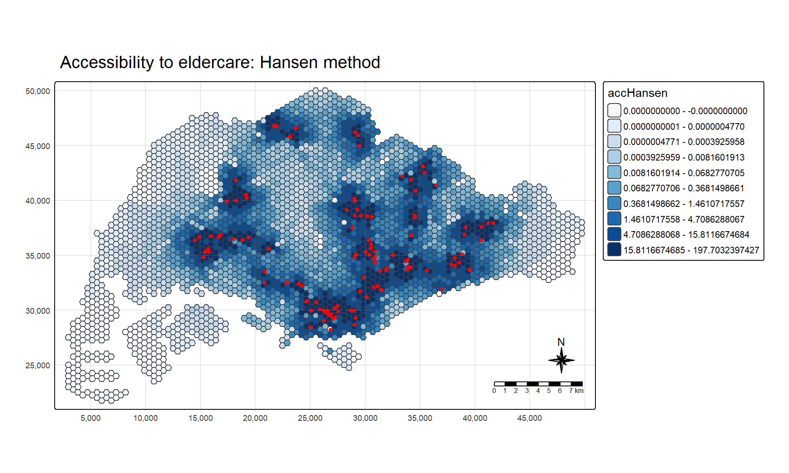
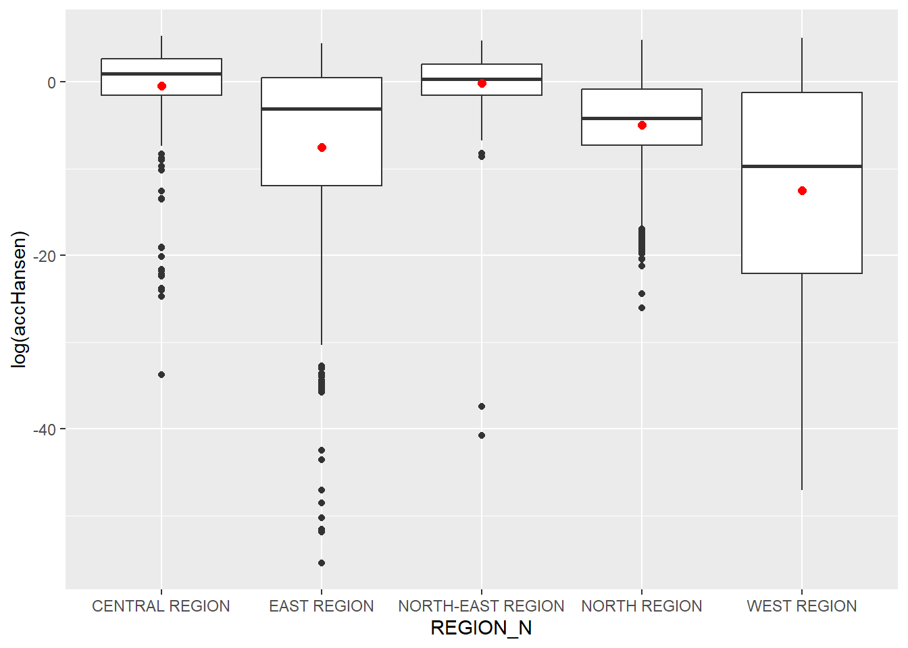
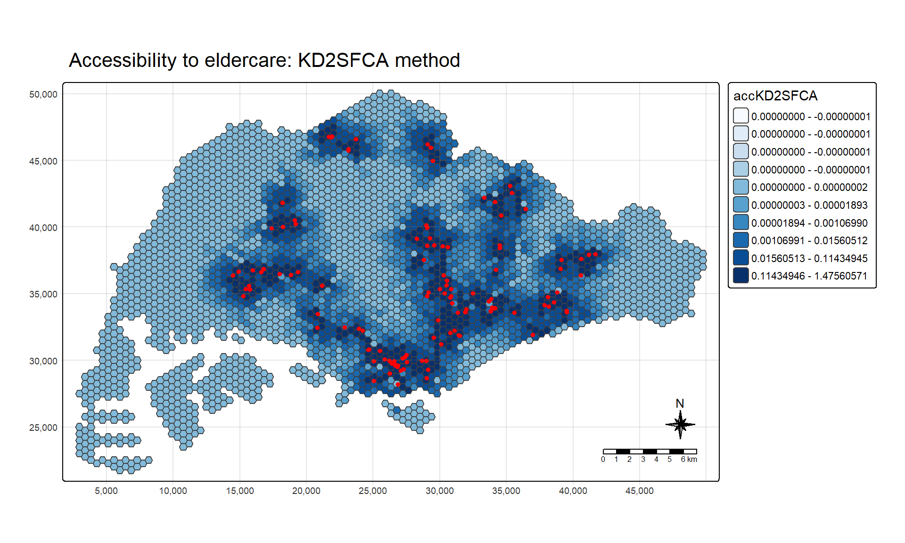
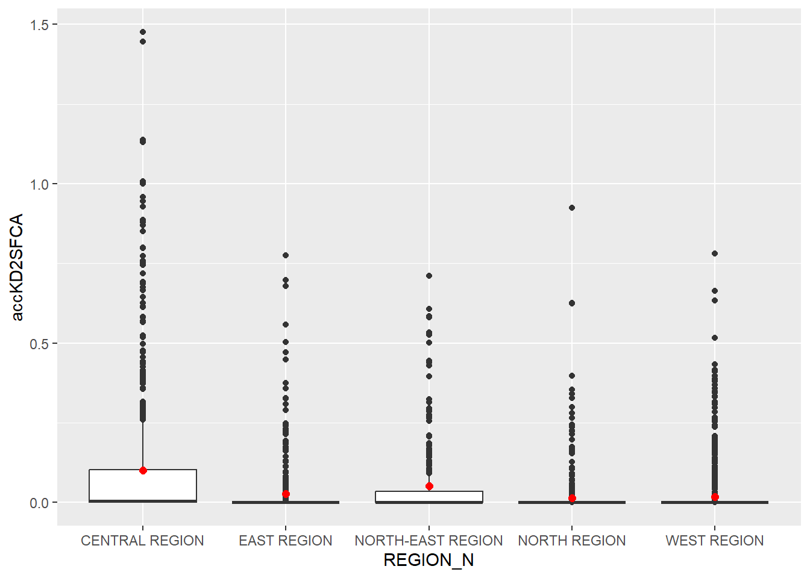
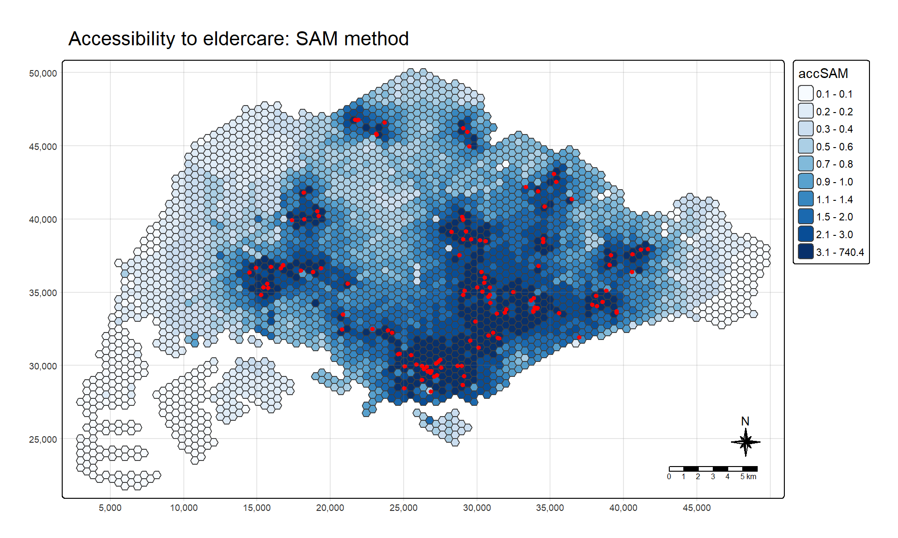
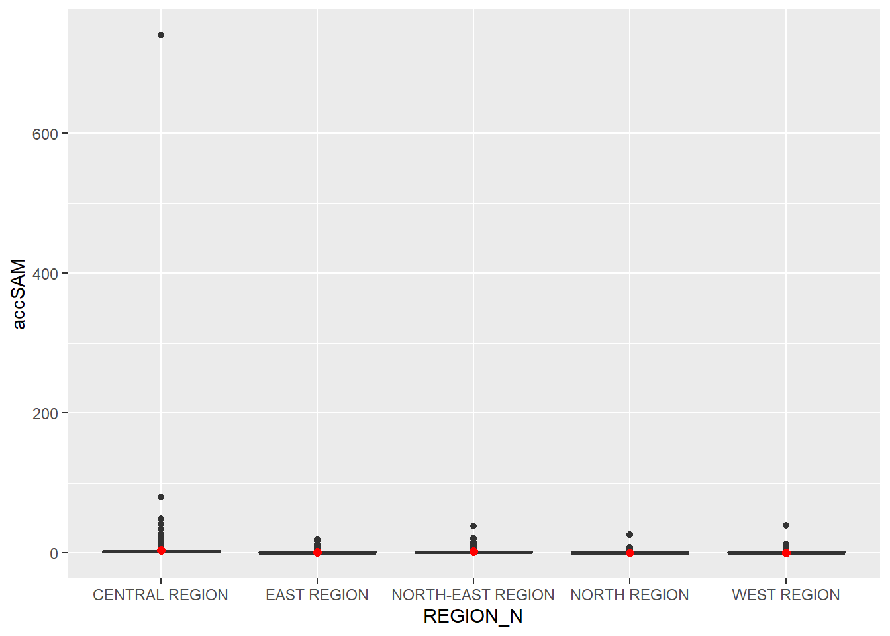
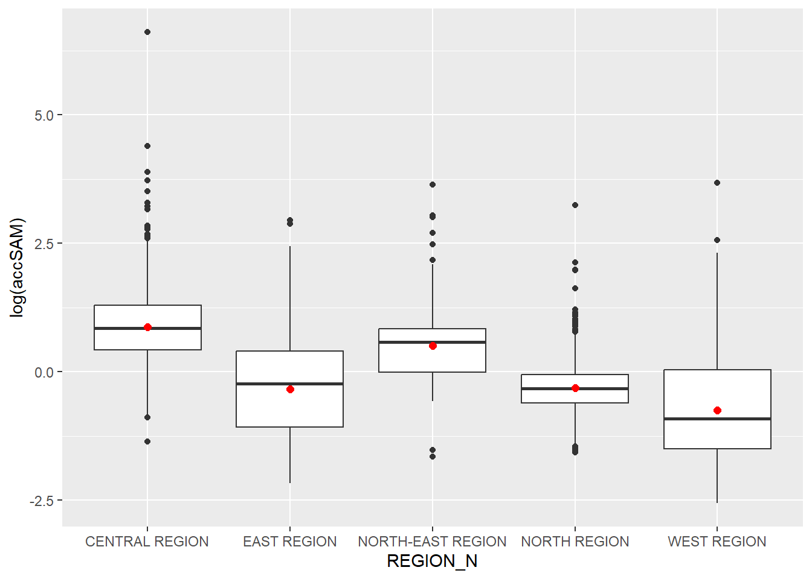

pacman::p_load(tmap, SpatialAcc, sf,
ggstatsplot, reshape2,
tidyverse)Hands-on Exercise 7: Modelling Geographical Accessibility
1 Overview
Geographical accessibility describes how easily a population can reach a service. This exercise focuses on how to model geographical accessibility using R’s geospatial analysis packages.
2 Learning Outcome
By the end of this exercise, the following will be achieved:
- importing GIS polygon and point data into R and saving them as simple feature data frames by using st_read() of sf;
- importing aspatial data into R as a tibble data frame by using read_csv() of readr and reshaping it into an origin by destination distance matrix;
- computing accessibility measures by using Hansen’s potential model, the Kernel Density Two-step Floating Catchment Area (KD2SFCA) method and the Spatial Accessibility Measure (SAM); and
- visualising the accessibility measures by using tmap and ggplot2.
3 The Data
Four data sets are used in this exercise.
| Data | Format | Description |
|---|---|---|
MP14_SUBZONE_NO_SEA_PL |
ESRI Shapefile | URA Master Plan 2014 subzone boundaries, downloaded from data.gov.sg |
hexagons |
ESRI Shapefile | Hexagonal grid of demand locations, created with st_make_grid() of sf package |
ELDERCARE |
ESRI Shapefile | Locations of eldercare services, downloaded from data.gov.sg |
OD_Matrix |
CSV | Network distances between every hexagon and every eldercare centre |
OD_Matrix contains the following fields:
| Field | Description |
|---|---|
origin_id |
Unique ID of the origin (i.e. fid of hexagon data set) |
destination_id |
Unique ID of the destination (i.e. fid of ELDERCARE data set) |
entry_cost |
Perpendicular distance between the origin and the nearest road |
network_cost |
Network distance between the origin and the destination |
exit_cost |
Perpendicular distance between the destination and the nearest road |
total_cost |
Sum of entry_cost, network_cost and exit_cost |
All the values of the cost related fields are in metres.
Note
Except for MP14_SUBZONE_NO_SEA_PL, the other three data sets are prepared by Prof. Kam for teaching and research purpose. Please obtain formal approval from Prof. Kam if you want to use them for other courses or usage.
4 Installing and Loading R Packages
The following R packages are used in this exercise:
| Package | Purpose |
|---|---|
| sf | Spatial data handling |
| SpatialAcc | Modelling geographical accessibility |
| tidyverse | Attribute data handling and statistical graphics |
| tmap | Thematic mapping |
| ggstatsplot | Statistical analysis |
| reshape2 | Reshaping data |
5 Geospatial Data Wrangling
5.1 Importing geospatial data
Three geospatial data sets are imported. Each shapefile is read with st_read() of sf:
mpsz <- st_read(dsn = "data/geospatial",
layer = "MP14_SUBZONE_NO_SEA_PL")Reading layer `MP14_SUBZONE_NO_SEA_PL' from data source
`C:\yxlinn\ISSS626-GAA\Hands-on_Ex\Hands-on_Ex07\data\geospatial'
using driver `ESRI Shapefile'
Simple feature collection with 323 features and 15 fields
Geometry type: MULTIPOLYGON
Dimension: XY
Bounding box: xmin: 2667.538 ymin: 15748.72 xmax: 56396.44 ymax: 50256.33
Projected CRS: SVY21hexagons <- st_read(dsn = "data/geospatial",
layer = "hexagons")Reading layer `hexagons' from data source
`C:\yxlinn\ISSS626-GAA\Hands-on_Ex\Hands-on_Ex07\data\geospatial'
using driver `ESRI Shapefile'
Simple feature collection with 3125 features and 6 fields
Geometry type: POLYGON
Dimension: XY
Bounding box: xmin: 2667.538 ymin: 21506.33 xmax: 50010.26 ymax: 50256.33
Projected CRS: SVY21 / Singapore TMeldercare <- st_read(dsn = "data/geospatial",
layer = "ELDERCARE")Reading layer `ELDERCARE' from data source
`C:\yxlinn\ISSS626-GAA\Hands-on_Ex\Hands-on_Ex07\data\geospatial'
using driver `ESRI Shapefile'
Simple feature collection with 120 features and 19 fields
Geometry type: POINT
Dimension: XY
Bounding box: xmin: 14481.92 ymin: 28218.43 xmax: 41665.14 ymax: 46804.9
Projected CRS: SVY21 / Singapore TMThe imported objects are simple feature data frames with the following geometry types:
mpsz: multipolygonhexagons: polygoneldercare: point
mpsz is reported with the coordinate reference system SVY21 and no EPSG code, whereas hexagons and eldercare are reported as SVY21 / Singapore TM.
5.2 Updating CRS information
The code chunk below updates the newly imported mpsz with the correct EPSG code (i.e. 3414).
mpsz <- st_transform(mpsz, 3414)
eldercare <- st_transform(eldercare, 3414)
hexagons <- st_transform(hexagons, 3414)The result is verified with st_crs():
st_crs(mpsz)Coordinate Reference System:
User input: EPSG:3414
wkt:
PROJCRS["SVY21 / Singapore TM",
BASEGEOGCRS["SVY21",
DATUM["SVY21",
ELLIPSOID["WGS 84",6378137,298.257223563,
LENGTHUNIT["metre",1]]],
PRIMEM["Greenwich",0,
ANGLEUNIT["degree",0.0174532925199433]],
ID["EPSG",4757]],
CONVERSION["Singapore Transverse Mercator",
METHOD["Transverse Mercator",
ID["EPSG",9807]],
PARAMETER["Latitude of natural origin",1.36666666666667,
ANGLEUNIT["degree",0.0174532925199433],
ID["EPSG",8801]],
PARAMETER["Longitude of natural origin",103.833333333333,
ANGLEUNIT["degree",0.0174532925199433],
ID["EPSG",8802]],
PARAMETER["Scale factor at natural origin",1,
SCALEUNIT["unity",1],
ID["EPSG",8805]],
PARAMETER["False easting",28001.642,
LENGTHUNIT["metre",1],
ID["EPSG",8806]],
PARAMETER["False northing",38744.572,
LENGTHUNIT["metre",1],
ID["EPSG",8807]]],
CS[Cartesian,2],
AXIS["northing (N)",north,
ORDER[1],
LENGTHUNIT["metre",1]],
AXIS["easting (E)",east,
ORDER[2],
LENGTHUNIT["metre",1]],
USAGE[
SCOPE["Cadastre, engineering survey, topographic mapping."],
AREA["Singapore - onshore and offshore."],
BBOX[1.13,103.59,1.47,104.07]],
ID["EPSG",3414]]The output now reports EPSG:3414.
5.3 Cleaning and updating attribute fields of the geospatial data
eldercare and hexagons contain many redundant fields. Hence, only the essential fields from each data set are retained. A new field called capacity and a new field called demand are added to eldercare and hexagons respectively. Both fields are derived with mutate() of dplyr.
eldercare <- eldercare %>%
select(fid, ADDRESSPOS) %>%
mutate(capacity = 100)hexagons <- hexagons %>%
select(fid) %>%
mutate(demand = 100)
Note
A constant value of 100 is used for both fields in this exercise. In practice, the actual demand of each hexagon and the actual capacity of each eldercare centre should be used.
6 Aspatial Data Handling and Wrangling
6.1 Importing the distance matrix
OD_Matrix.csv is imported with read_csv() of readr. The imported object is a tibble data frame called ODMatrix.
ODMatrix <- read_csv("data/aspatial/OD_Matrix.csv", skip = 0)ODMatrix has 375,000 rows, one for each of the 3,125 hexagons paired with each of the 120 eldercare centres.
head(ODMatrix, 10)# A tibble: 10 × 6
origin_id destination_id entry_cost network_cost exit_cost total_cost
<dbl> <dbl> <dbl> <dbl> <dbl> <dbl>
1 1 1 668. 19847. 47.6 20562.
2 1 2 668. 45027. 31.9 45727.
3 1 3 668. 17644. 173. 18486.
4 1 4 668. 36010. 92.2 36770.
5 1 5 668. 31068. 64.6 31801.
6 1 6 668. 31195. 117. 31980.
7 1 8 668. 32475. 55.1 33198.
8 1 9 668. 22267. 28.4 22963.
9 1 10 668. 45220. 55.1 45943.
10 1 11 668. 34898. 27.5 35593.6.2 Tidying the distance matrix
The imported ODMatrix is in long format, with one row for each origin and destination pair. Most modelling packages in R expect a matrix instead, with the origins (the from field) in the rows and the destinations (the to field) in the columns.
spread() of tidyr is used to transform the origin and destination matrix from the long format into the wide format. Only origin_id, destination_id and total_cost are needed. origin_id is dropped after the reshape because the rows already follow its order.
distmat <- ODMatrix %>%
select(origin_id, destination_id, total_cost) %>%
spread(destination_id, total_cost) %>%
select(c(-c('origin_id')))The first 10 rows and 11 columns of the result are displayed below. Each row is an origin and each column is a destination:
distmat[1:10, 1:11]# A tibble: 10 × 11
`1` `2` `3` `4` `5` `6` `8` `9` `10` `11` `12`
<dbl> <dbl> <dbl> <dbl> <dbl> <dbl> <dbl> <dbl> <dbl> <dbl> <dbl>
1 20562. 45727. 18486. 36770. 31801. 31980. 33198. 22963. 45943. 35593. 36362.
2 23069. 48233. 20992. 39276. 34307. 34486. 35704. 25469. 48450. 38100. 38869.
3 23590. 48754. 21513. 39797. 34828. 35007. 36225. 25991. 48971. 38621. 39390.
4 24069. 49233. 21992. 40276. 35307. 35486. 36705. 26470. 49450. 39100. 39869.
5 24241. 49405. 22164. 40448. 35479. 35658. 36877. 26642. 49622. 39272. 40041.
6 24605. 49769. 22528. 40812. 35843. 36022. 37241. 27006. 49986. 39636. 40405.
7 19376. 44540. 17299. 35583. 30614. 30793. 32011. 21776. 44756. 34407. 35176.
8 19662. 44826. 17585. 35869. 30900. 31079. 32297. 22062. 45043. 34693. 35462.
9 19945. 45109. 17868. 36152. 31183. 31362. 32580. 22345. 45325. 34976. 35744.
10 20331. 45495. 18254. 36538. 31569. 31748. 32966. 22731. 45711. 35361. 36130.Currently, the distances are measured in metres because SVY21 projected coordinate system is used. They are converted to kilometres and stored as a matrix.
distmat_km <- as.matrix(distmat/1000)7 Modelling and Visualising Accessibility using the Hansen Method
7.1 Computing Hansen’s accessibility
Hansen’s accessibility is computed with ac() of SpatialAcc. The output is saved as a data frame called acc_Hansen:
acc_Hansen <- data.frame(ac(hexagons$demand,
eldercare$capacity,
distmat_km,
#d0 = 5,
power = 2,
family = "Hansen"))head(acc_Hansen, 10) ac.hexagons.demand..eldercare.capacity..distmat_km..power...2..
1 1.648313e-14
2 1.096143e-16
3 3.865857e-17
4 1.482856e-17
5 1.051348e-17
6 5.076391e-18
7 1.769616e-13
8 9.979647e-14
9 5.671831e-14
10 2.621063e-14The default field name is untidy, so it is renamed to accHansen:
colnames(acc_Hansen) <- "accHansen"
head(acc_Hansen, 10) accHansen
1 1.648313e-14
2 1.096143e-16
3 3.865857e-17
4 1.482856e-17
5 1.051348e-17
6 5.076391e-18
7 1.769616e-13
8 9.979647e-14
9 5.671831e-14
10 2.621063e-14The data table is then converted to a tibble:
acc_Hansen <- as_tibble(acc_Hansen)Lastly, bind_cols() of dplyr joins the acc_Hansen tibble to the hexagons simple feature data frame. The output is called hexagon_Hansen.
hexagon_Hansen <- bind_cols(hexagons, acc_Hansen)
head(hexagon_Hansen, 10)Simple feature collection with 10 features and 3 fields
Geometry type: POLYGON
Dimension: XY
Bounding box: xmin: 2667.538 ymin: 22756.33 xmax: 3677.901 ymax: 29006.33
Projected CRS: SVY21 / Singapore TM
fid demand accHansen geometry
1 1 100 1.648313e-14 POLYGON ((2667.538 27506.33...
2 2 100 1.096143e-16 POLYGON ((2667.538 25006.33...
3 3 100 3.865857e-17 POLYGON ((2667.538 24506.33...
4 4 100 1.482856e-17 POLYGON ((2667.538 24006.33...
5 5 100 1.051348e-17 POLYGON ((2667.538 23506.33...
6 6 100 5.076391e-18 POLYGON ((2667.538 23006.33...
7 7 100 1.769616e-13 POLYGON ((3100.551 28756.33...
8 8 100 9.979647e-14 POLYGON ((3100.551 28256.33...
9 9 100 5.671831e-14 POLYGON ((3100.551 27756.33...
10 10 100 2.621063e-14 POLYGON ((3100.551 27256.33...Notice that hexagon_Hansen is a simple feature data frame and not a typical tibble.
The steps above can also be performed in a single code chunk:
acc_Hansen <- data.frame(ac(hexagons$demand,
eldercare$capacity,
distmat_km,
#d0 = 50,
power = 2,
family = "Hansen"))
colnames(acc_Hansen) <- "accHansen"
acc_Hansen <- as_tibble(acc_Hansen)
hexagon_Hansen <- bind_cols(hexagons, acc_Hansen)7.2 Visualising Hansen’s accessibility
7.2.1 Extracting the map extent
The extent of the hexagons simple feature data frame is extracted with st_bbox() of sf:
mapex <- st_bbox(hexagons)A high quality cartographic map of accessibility to eldercare centres in Singapore is then created with the mapping functions of tmap:
tm_shape(hexagon_Hansen,
bbox = mapex) +
tm_polygons(fill = "accHansen",
fill.scale = tm_scale_intervals(
style = "quantile",
n = 10,
values = "brewer.blues")) +
tm_shape(eldercare) +
tm_dots(size = 0.3,
fill = "red",
col = "black") +
tm_title("Accessibility to eldercare: Hansen method") +
tm_layout(frame = TRUE) +
tm_compass(type = "8star", size = 2) +
tm_scalebar() +
tm_grid(alpha = 0.2)
NoteAnalysis
Accessibility follows the locations of the eldercare centres. The highest values form several dark blue clusters around concentrations of centres (red dots). Hansen’s accessibility falls off quickly with distance, so a hexagon scores high only when one or more centres lie within a few kilometres. The lightest hexagons are along the edges of the island, such as the west and east, where the nearest centre is far away. The lowest class is effectively zero, meaning those hexagons are very far from every centre.
7.3 Statistical graphic visualisation
In this section, the distribution of Hansen’s accessibility values is compared across URA planning regions.
The planning region field is first added to hexagon_Hansen with st_join():
hexagon_Hansen <- st_join(hexagon_Hansen, mpsz,
join = st_intersects,
largest = TRUE)
Note
Each hexagon should contribute one value to the boxplot of its planning region. With st_intersects alone, a hexagon that lies across a subzone boundary is matched to every subzone it touches and is returned once for each. Border hexagons would then be counted several times, and some would be counted in more than one region, which distorts the medians and quartiles of the boxplots.
largest = TRUE assigns each hexagon to the subzone with which it overlaps most, so the output keeps one row per hexagon.
Next, ggplot() is used to plot the distribution as boxplots, with the mean marked in red:
ggplot(data = hexagon_Hansen,
aes(y = log(accHansen),
x = REGION_N)) +
geom_boxplot() +
geom_point(stat = "summary",
fun = "mean",
colour = "red",
size = 2)
NoteAnalysis
North-East and Central have the highest median accessibility, followed by East, North and West. Central and North-East also have narrow boxes, so accessibility is fairly even across their hexagons. East and West have much wider boxes. Both regions contain well-served hexagons as well as some that are very far from any eldercare centre.
The mean (red dot) lies below the median in every region, and by a wide margin in East and West. A long tail of very low values pulls the mean down. All outliers are on the low side, and the upper whiskers reach similar levels in every region. Every region therefore has some well-served hexagons, and the differences between regions come mostly from how many hexagons score very low.
8 Modelling and Visualising Accessibility using the KD2SFCA Method
8.1 Computing KD2SFCA’s accessibility
Most of the steps are repeated from the Hansen method, with some of the code combined into one chunk. KD2SFCA’s accessibility is computed with ac() of SpatialAcc, and the output is saved as a data frame called acc_KD2SFCA. KD2SFCA is used for the family argument.
acc_KD2SFCA <- data.frame(ac(hexagons$demand,
eldercare$capacity,
distmat_km,
d0 = 5,
power = 2,
family = "KD2SFCA"))
colnames(acc_KD2SFCA) <- "accKD2SFCA"
acc_KD2SFCA <- as_tibble(acc_KD2SFCA)
hexagon_KD2SFCA <- bind_cols(hexagons, acc_KD2SFCA)head(hexagon_KD2SFCA, 10)Simple feature collection with 10 features and 3 fields
Geometry type: POLYGON
Dimension: XY
Bounding box: xmin: 2667.538 ymin: 22756.33 xmax: 3677.901 ymax: 29006.33
Projected CRS: SVY21 / Singapore TM
fid demand accKD2SFCA geometry
1 1 100 0 POLYGON ((2667.538 27506.33...
2 2 100 0 POLYGON ((2667.538 25006.33...
3 3 100 0 POLYGON ((2667.538 24506.33...
4 4 100 0 POLYGON ((2667.538 24006.33...
5 5 100 0 POLYGON ((2667.538 23506.33...
6 6 100 0 POLYGON ((2667.538 23006.33...
7 7 100 0 POLYGON ((3100.551 28756.33...
8 8 100 0 POLYGON ((3100.551 28256.33...
9 9 100 0 POLYGON ((3100.551 27756.33...
10 10 100 0 POLYGON ((3100.551 27256.33...
Note
KD2SFCA works in two steps. In the first step, each eldercare centre receives a supply to demand ratio: its capacity divided by the demand of all hexagons within 5 km, with nearer hexagons weighted more heavily. In the second step, each hexagon adds up the ratios of all centres within 5 km of it, weighting nearer centres more heavily. Unlike Hansen’s method, a centre further than 5 km contributes nothing, and a hexagon with no centre within 5 km scores exactly zero.
8.2 Visualising KD2SFCA’s accessibility
The KD2SFCA accessibility values in accKD2SFCA are mapped with the mapping functions of tmap. mapex from the previous section is reused for the bbox argument.
tm_shape(hexagon_KD2SFCA,
bbox = mapex) +
tm_polygons(fill = "accKD2SFCA",
fill.scale = tm_scale_intervals(
style = "quantile",
n = 10,
values = "brewer.blues")) +
tm_shape(eldercare) +
tm_dots(size = 0.3,
fill = "red",
col = "black") +
tm_title("Accessibility to eldercare: KD2SFCA method") +
tm_layout(frame = TRUE) +
tm_compass(type = "8star", size = 2) +
tm_scalebar() +
tm_grid(alpha = 0.2)
NoteAnalysis
Under the KD2SFCA method, accessibility is high only around major clusters of eldercare centres (red dots), and it declines steeply with distance. A substantial part of the island is shaded in the lowest colour on the map, which covers scores from 0 to 0.00000002. These are hexagons with no centre inside the 5 km catchment, which score exactly zero, together with hexagons whose scores are close to zero. Within this area, the map shows almost no variation.
8.3 Statistical graphic visualisation
The distribution of KD2SFCA’s accessibility values is compared across URA planning regions.
The planning region field is first added to hexagon_KD2SFCA with st_join.
st_agr(hexagon_KD2SFCA) <- "constant"
hexagon_KD2SFCA <- st_join(hexagon_KD2SFCA, mpsz,
join = st_intersects,
largest = TRUE)ggplot() is then used to plot the distribution as boxplots.
ggplot(data = hexagon_KD2SFCA,
aes(y = accKD2SFCA,
x = REGION_N)) +
geom_boxplot() +
geom_point(stat = "summary",
fun = "mean",
colour = "red",
size = 2)
NoteAnalysis
The boxplot shows that the Central Region has the highest KD2SFCA accessibility, with a box reaching around 0.10, a mean of around 0.10 and outliers up to 1.48. The North-East Region is second, with a box reaching about 0.03. In the East, North and West Regions, the boxes collapse to a line at zero, so most hexagons have little or no accessibility within the 5 km catchment. In these regions, the mean is higher than the median because most hexagons score close to zero, while a few hexagons near clusters of centres score much higher and raise the mean. Overall, KD2SFCA accessibility is concentrated in a few pockets, mainly in the Central Region, rather than spread evenly across the island.
9 Modelling and Visualising Accessibility using Spatial Accessibility Measure (SAM) Method
9.1 Computing SAM accessibility
The Spatial Accessibility Measure (SAM) is computed with ac() of SpatialAcc by setting family = "SAM", and data.frame() is used to save the output in a data frame called acc_SAM. Like Hansen, SAM counts every eldercare centre, with no catchment cutoff.
acc_SAM <- data.frame(ac(hexagons$demand,
eldercare$capacity,
distmat_km,
#d0 = 5,
power = 2,
family = "SAM"))
colnames(acc_SAM) <- "accSAM"
acc_SAM <- as_tibble(acc_SAM)
hexagon_SAM <- bind_cols(hexagons, acc_SAM)head(hexagon_SAM, 10)Simple feature collection with 10 features and 3 fields
Geometry type: POLYGON
Dimension: XY
Bounding box: xmin: 2667.538 ymin: 22756.33 xmax: 3677.901 ymax: 29006.33
Projected CRS: SVY21 / Singapore TM
fid demand accSAM geometry
1 1 100 0.11941792 POLYGON ((2667.538 27506.33...
2 2 100 0.10101549 POLYGON ((2667.538 25006.33...
3 3 100 0.09775876 POLYGON ((2667.538 24506.33...
4 4 100 0.09490965 POLYGON ((2667.538 24006.33...
5 5 100 0.09391923 POLYGON ((2667.538 23506.33...
6 6 100 0.09187587 POLYGON ((2667.538 23006.33...
7 7 100 0.13009759 POLYGON ((3100.551 28756.33...
8 8 100 0.12738225 POLYGON ((3100.551 28256.33...
9 9 100 0.12479277 POLYGON ((3100.551 27756.33...
10 10 100 0.12139059 POLYGON ((3100.551 27256.33...9.2 Visualising SAM’s accessibility
The SAM accessibility values in accSAM are mapped with the mapping functions of tmap. mapex is reused for the bbox argument.
tm_shape(hexagon_SAM,
bbox = mapex) +
tm_polygons(fill = "accSAM",
fill.scale = tm_scale_intervals(
style = "quantile",
n = 10,
values = "brewer.blues")) +
tm_shape(eldercare) +
tm_dots(size = 0.3,
fill = "red",
col = "black") +
tm_title("Accessibility to eldercare: SAM method") +
tm_layout(frame = TRUE) +
tm_compass(type="8star", size = 2) +
tm_scalebar() +
tm_grid(alpha = 0.2)
NoteAnalysis
Under the SAM method, accessibility is the highest in the central and southern parts of the island, where many eldercare centres lie close together. As SAM counts every centre at any distance, each hexagon has a non-zero score. A centre’s contribution shrinks as it gets further away, but it shrinks more slowly than under KD2SFCA. As such, the high-scoring hexagons form a broad, connected area around the cluster of centres, instead of small separate pockets. The lowest scores are at the edges of the island, far from most eldercare centres.
9.3 Statistical graphic visualisation
The distribution of SAM’s accessibility values is compared across URA planning regions.
The planning region field is first added to hexagon_SAM with st_join().
hexagon_SAM <- st_join(hexagon_SAM, mpsz,
join = st_intersects,
largest = TRUE)ggplot() is then used to plot the distribution of SAM accessibility values as boxplots.
ggplot(data = hexagon_SAM,
aes(y = accSAM,
x = REGION_N)) +
geom_boxplot() +
geom_point(stat = "summary",
fun = "mean",
colour = "red",
size = 2)
The raw scores are dominated by a few extreme values, so the boxes are compressed and the regions cannot be properly compared. Hence, the same boxplot is drawn on a log scale as shown below.
ggplot(data = hexagon_SAM,
aes(y = log(accSAM),
x = REGION_N)) +
geom_boxplot() +
geom_point(stat = "summary",
fun = "mean",
colour = "red",
size = 2)
NoteAnalysis
The boxplot shows that the Central Region has the highest SAM accessibility, followed by the North-East Region. The North and East Regions have similar medians, and the West Region has the lowest. The spread also differs between regions. The North Region has a narrow box, so most of its hexagons have similar scores. On the other hand, the East and West Regions have wider boxes, which means that accessibility varies much more between hexagons in these regions.